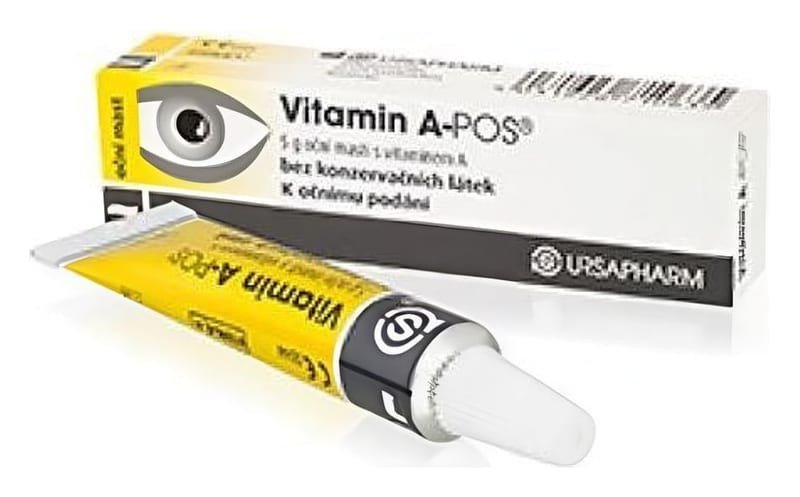

Vitamin A-Pos 250 IU 5 g Göz Merhemi

Ne için kullanılır
KT · Bölüm 1VİTAMİN A-POS beyaz/sarı renkli, hafif saydam homojen, 5 g’lık tüplerde bulunan göz merhemidir. A Vitamini esansiyel bir vitamindir. VİTAMİN A-POS gözün dış yüzeyini korur ve tahriş olmuş göz zarının onarımında yardımcı olur. Gözdeki yanma, kuruma ve yorgunluk hissini hafifletir. A vitamini eksikliğine bağlı oluşan göz iltihabı ve atropik kornea (gözün en ön kısmında bulunan saydam doku) değişiklikleri için destekleyici tedavi olarak kullanılır. Bunların yanı sıra, mucin (gözyaşının en iç tabakası) eksikliğine bağlı göz iltihabı ve beslenmeye bağlı saydam tabaka (kornea) rahatsızlıklarında da destekleyici tedavi olarak kullanılır.
Sayfa 2 / 5